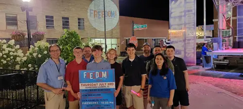
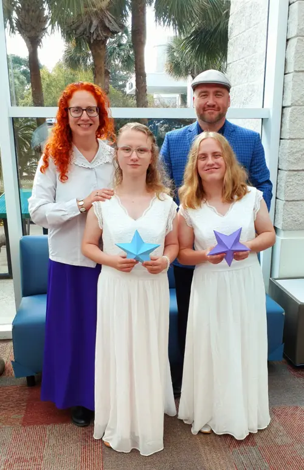

Laurens, South Carolina
George Latta
Supreme Deputy, International Order of the Rainbow for Girls (South Carolina)
Grand Scribe, Grand Royal Arch Chapter of South Carolina
Life Coach · Leader · Retired
Contact me
About me
Current Roles
- Supreme Deputy, International Order of the Rainbow for Girls (South Carolina)
- Grand Scribe, Grand Royal Arch Chapter of South Carolina
Hello & greetings everyone. I created this page to give everyone a little info about me & a way to contact me.
For those who don't know, my name is George Latta.
I worked most of my life in law enforcement. I've been retired for a little while now. That being said, I think I work more now than I ever did.
I do a great deal with Freemasonry, York Rite, Rainbow Girls, DeMolay plus many other branches. It keeps me busy to say the least.
My loving family support me in my endeavors. My wife Patricia, daughters Jessica and Jasmine, my parents George SR & Theresa. I cherish them & their support dearly.
I have lived in the Laurens area since 2003. Before then I was a wandering soul. Now I just save it for traveling.
What I like to do

Christmas observance 2025
The Knights Templar of South Carolina hold a Christmas Observance every year throughout the state. If you have never attended one, I highly suggest going. They are open to the public & showcase the Christian Traditions of this appended body of Freemasonry.

Traveling man at heart
For our 21st wedding anniversary My wife Trish & I took a 9 day cruise out of Ft Lauderdale Florida.
November 2025

Masonic fellowship
I enjoy great opportunities to fellowship with brothers at lodges & special degrees. Either seeing old friends or making new ones

DeMolay
I'm proud to be a part of starting DeMolay at our local Laurens lodge. It is a great opportunity for young men & hope to see it grow & thrive

Scottish Pride
Always great to be able to celebrate heritage with brothers at a lodge.
The kilt I'm wearing is the official registered Kilt of Freemasonry

Palmetto Lodge 19
It was a great honor to serve as WM for 2023 & 2024. The brothers at Palmetto 19 are some of the best ones you'll ever meet.


York Rite
Of the branches of Freemasonry, York Rite has a special place in my heart

Rainbow girls
Ever since my daughter's joined Rainbow Girls (S.C.I.O.R.G.) I have been as involved as possible. Starting out on the local level. Then with the South Carolina state level. This is a great organization for young women ages 11-20. It teaches great values, creates great leaders & makes lasting friendships for the girls. The organization is associated with freemasonry, but no freemason connection is required for joining.

Grand York Rite
I've enjoyed serving the York Rite in my local bodies. Serving as High Priest, Illustrious Master & Eminent Commander. I've also had the opportunity to serve at state level as Grand Master of the third veil, Grand Captain of the host, District deputy Illustrious Grand Master & District Representative of the 3rd district for all 3 Grand Bodies of South Carolina.
I plan to continue to work within the York Rite to help foster it's growth
Contact me
I'd love to hear from you.
Email George